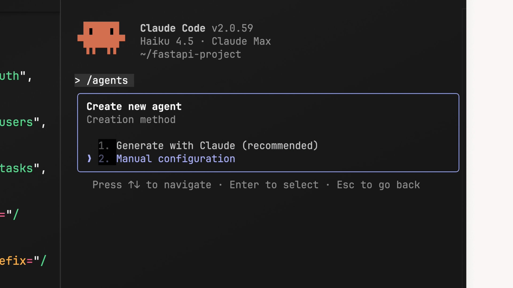
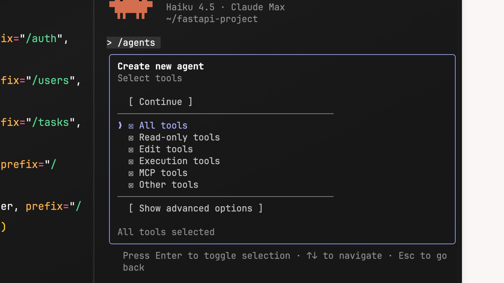
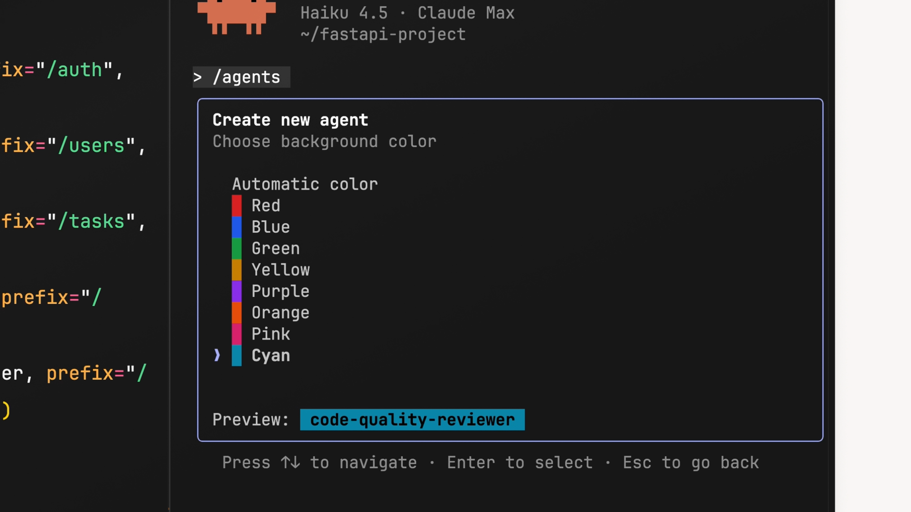
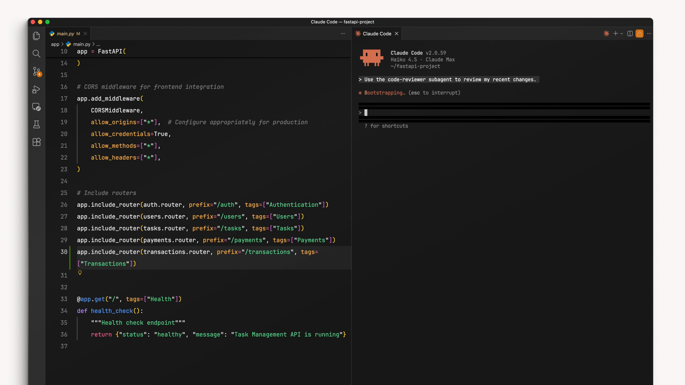

Claude Code에는 기본 제공 서브에이전트가 있지만, 직접 만들 수도 있습니다. 커스텀 서브에이전트는 코드 리뷰, 테스트 작성, 문서 확인 등 특정 작업에 특화되어 있습니다. 서브에이전트는 마크다운 파일에 YAML 프론트매터를 사용해 정의하며, 이를 통해 Claude가 서브에이전트를 언제 사용할지, 어떻게 동작해야 하는지를 알 수 있습니다.
서브에이전트 만들기
서브에이전트를 만드는 가장 쉬운 방법은 /agents 슬래시 명령어를 사용하는 것입니다. 이 명령어를 실행하면 서브에이전트를 관리하는 메인 인터페이스가 열립니다. 거기서 새 에이전트 만들기 를 선택하세요.
먼저 서브에이전트의 범위를 선택하라는 메시지가 표시됩니다:
- 프로젝트 수준 -- 현재 프로젝트에서만 사용 가능
- 사용자 수준 -- 내 컴퓨터의 모든 프로젝트에서 공유
다음으로, 만드는 방식을 선택할 수 있습니다. 설정을 직접 작성할 수도 있지만, Claude가 자동으로 생성하도록 하는 방법을 권장합니다. 서브에이전트가 수행할 작업을 설명하면, Claude가 이를 바탕으로 이름, 설명, 시스템 프롬프트를 만들어 줍니다.

도구 커스터마이징
생성 과정에서 서브에이전트가 접근할 수 있는 도구를 커스터마이징할 수 있습니다. 도구 카테고리는 다음과 같습니다:
- 읽기 전용 도구
- 편집 도구
- 실행 도구
- MCP 도구
- 기타 도구

서브에이전트에 실제로 필요한 것이 무엇인지 생각해 보세요. 코드 리뷰어라면 편집 도구는 필요하지 않을 것입니다 -- 코드를 수정하는 것이 아니라 읽고 분석하는 역할이기 때문입니다. 다만, 대기 중인 변경 사항을 더 쉽게 파악할 수 있도록 실행 도구는 활성화해 두는 것이 좋을 수 있습니다.
모델 및 색상 선택
도구 설정이 끝나면, 서브에이전트를 구동할 Claude 모델을 선택합니다. 선택지는 다음과 같습니다:
- Haiku -- 빠르고 가벼운 작업에 최적
- Sonnet -- 속도와 심층 분석의 균형이 잘 맞는 중간 모델
- Opus -- 복잡한 분석 작업에 최적
- Inherit -- 메인 대화에서 사용 중인 모델을 그대로 사용
마지막으로, 색상을 선택합니다. 이 색상은 UI에 표시되어 어떤 서브에이전트가 활성화되어 있는지 한눈에 알 수 있게 해줍니다. 작은 기능이지만 여러 서브에이전트를 동시에 사용할 때 유용합니다.

설정 파일
생성이 완료되면, 서브에이전트 설정 파일이 프로젝트에 저장됩니다 (일반적으로 .claude/agents/your-agent-name.md 경로에 저장됩니다). 일반적인 서브에이전트 설정 파일의 모습은 다음과 같습니다:
---
name: code-quality-reviewer
description: Use this agent when you need to review recently written or modified code for quality, security, and best practice compliance.
tools: Bash, Glob, Grep, Read, WebFetch, WebSearch
model: sonnet
color: purple
---
You are an expert code reviewer specializing in quality assurance, security best practices, and
adherence to project standards. Your role is to thoroughly examine recently written or modified code
and identify issues that could impact reliability, security, maintainability, or performance.각 필드를 살펴보겠습니다:
-
name-- 서브에이전트의 고유 식별자입니다. Claude에게 직접 요청하거나 메시지에@agent code-quality-reviewer를 입력해서 참조할 수 있습니다. -
description-- Claude가 서브에이전트를 언제 사용할지 결정하는 기준입니다. 한 줄로 작성해야 하며 (줄 바꿈이 필요할 경우 이스케이프 줄바꿈 문자\n를 사용하세요). 예시 대화를 포함하면 Claude가 언제 위임해야 하는지 이해하는 데 도움이 됩니다. -
tools-- 서브에이전트가 접근할 수 있는 도구 목록입니다. 생성 시 선택한 도구가 반영되지만, 언제든지 이 목록을 수정할 수 있습니다. -
model-- 사용할 Claude 모델을 지정합니다:sonnet,opus,haiku, 또는inherit. -
color-- 서브에이전트를 식별하기 위한 UI 색상입니다.
시스템 프롬프트
마크다운 파일의 본문 (YAML 프론트매터 아래의 모든 내용)이 시스템 프롬프트입니다. 여기에 서브에이전트에게 줄 지시사항을 작성합니다: 무엇에 집중해야 하는지, 어떻게 분석해야 하는지, 그리고 결과를 메인 에이전트에게 어떻게 보고해야 하는지를 정의합니다.
잘 작성된 시스템 프롬프트는 유용한 서브에이전트와 핵심을 놓치는 서브에이전트를 가르는 차이입니다. 서브에이전트가 무엇을 찾아야 하는지, 결과물을 어떻게 구조화해야 하는지 구체적으로 명시하세요.
Claude가 자동으로 서브에이전트를 사용하게 하기
명시적으로 요청하지 않아도 Claude가 자동으로 서브에이전트에 작업을 위임하게 하려면, description 필드에 "proactively" 라는 단어를 포함하세요. 예를 들어:
description: Proactively suggest running this agent after major code changes...description에 예시 대화를 추가하면 Claude가 서브에이전트를 사용해야 하는 특정 상황을 더 잘 이해할 수 있습니다. 예시가 구체적일수록 Claude가 언제 위임해야 할지 더 잘 파악합니다.
서브에이전트 테스트하기
서브에이전트를 만든 후, 코드를 수정하고 Claude에게 리뷰를 요청해 보세요.

예상할 때 서브에이전트가 사용되지 않는다면, description을 다시 확인하세요. 더 구체적인 예시와 트리거 시나리오를 추가하면 Claude가 언제 서브에이전트에 작업을 위임해야 할지 더 잘 이해할 수 있습니다.